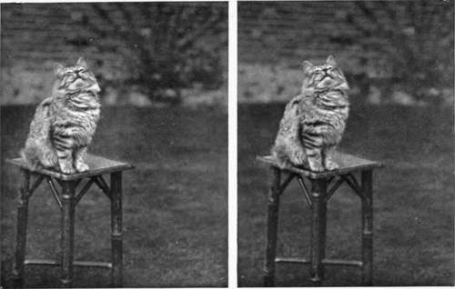
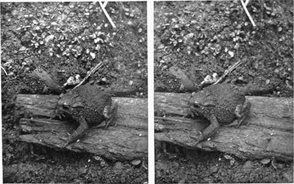

Chapter XIV. Nightingale Lane
Description
This section is from the book "Nature Photography For Beginners", by E. J. Bedford. Also available from Amazon: Nature Photography for Beginners.
Chapter XIV. Nightingale Lane
During a favourite walk down a familiar lane about the end of the month of May, I saw a Nightingale with a leaf in her mouth and, feeling sure she was nest-building not far off, stood still to watch her. Having observed her go several times to the same spot in the hedge, I went up after she had left the place and found what was undoubtedly the foundations of a nest just commenced in a bramble. On visiting the spot again ten days later, I found the nest finished and containing four eggs; and a photograph of it was taken. After another interval of eleven days, during which period I had once or twice passed the spot and had seen the bird sitting on the nest, another visit was made. This time I found three young birds in the nest, the fourth egg being on the point of hatching. Three days later I paid another visit and found the four young ones in the nest. On this occasion I succeeded in obtaining a photograph of the hen bird on the nest, through a hole in the hedge. The photograph was obtained without covering or hiding the camera in any way. The exercise of patience, coupled with quiet and steady movements, will often enable the photographer to do many things otherwise impossible. A good deal of light was cut off from the nest by the overhanging foliage of the hedge, and a time exposure was therefore necessary. The bird enabled me to give this by remaining perfectly still, the newly-hatched young in the nest contributing, no doubt, largely to this result, by making their mother loth to leave them. I then left the spot for several hours, returning in the afternoon, when the sun was shining into the hedge, helping to light up the vicinity of the nest. Exposures were made on the young birds, but, on account of their movements, instantaneous ones were necessary, and the resulting negatives were not as good as I could have wished. A view of the lane was also taken, showing the site of the nest. This illustrates a point I have mentioned elsewhere as to the advisability of obtaining, when possible, a series of views of the same subject. In this case, for instance, photographs were taken showing the site, the nest and eggs, the hen bird on the nest, and the newly-hatched young ones.
The Nightingale, that " prince of songsters," must be a favourite with every true Nature lover, since its delicious melody is unequalled throughout the whole of the bird world. It is a spring migrant, that is to say, it comes to us in the spring and leaves us again for more southern climes in the autumn. It appears to be very strangely spread over England, there being some parts, for instance, west of the Exe, and north of York, where it never breeds. It is also unknown in Scotland or Ireland. It is impossible to describe the thrill of pleasure caused by listening to its notes poured forth during the twilight of some delightful still evening in spring or early summer. The song when heard in the daytime loses somewhat in effect, because it then becomes a part of the general chorus. In the evening—when nearly all other birds are silent—the song of this minstrel of the grove may be heard in all its beauty.
The male birds arrive in this country about ten or twelve days before the females, and during this period they appear to sing almost continuously day and night. When the females arrive pairing commences, and a site is selected for the nest, which is constructed principally of dead oak leaves and a little dry grass and lined with horsehair. It is generally placed on or near the ground in a hedge or small plantation, and is very difficult to find. The eggs number from four to six; they are olive-coloured, matching closely the dead leaves around, but occasionally they may be found of a bluish shade. It is said the bird seldom sings after the eggs are laid, and after they are hatched never; and I am inclined to think this is practically true. When the young are hatched both the parent birds are very attentive to them, and a curious alarm note, something like a hoarse croak, is uttered if the nest is approached too closely.
The Nightingale is a near relative of the Robin, and the young of both species have spotted breasts, showing their close connection with the Thrush family. In habits, also, the Nightingale is somewhat similar to the Robin, excepting that the latter is much more familiar with human beings. The Nightingale, on the other hand, is of rather a shy nature, but I have, notwithstanding, been able on many occasions to get within a yard or two of it while it was singing, by cautiously approaching it, and have seen its little throat vibrating in the ecstasy of its song. But with the slightest indication of movement on the part of the observer the bird will fly a short distance away to a more secluded spot, if it finds itself watched, and there, after a short interval, will recommence its song.
The birds seem to return to the same haunts year after year, and in the particular lane mentioned above, I have found the nest, with few exceptions, season after season for some years past. Sometimes in the northern part of England, where the bird is not so plentiful as in the south, special trains are run to enable the people in the large towns to visit a locality where the bird has appeared, for the purpose of hearing its song. I have also heard of a case where a certain individual living in the south of England gave up a country house on account of the number of Nightingales in the vicinity. This individual was unable to sleep owing to their continuous song during the night. These two instances serve, perhaps, to show how differently the song may appeal to different persons.
The bird is a special favourite of mine, and I have been fortunate enough to live all my life near its haunts, where it is particularly numerous. I have often, during a short walk in the spring, heard as many as six or eight different birds singing. In years gone by the Nightingale used to be caught and kept in a cage, where, however, it soon pined away and died. The Bird Protection Laws, now in force in many places during the whole year, have doubtless put an end to a great deal of this sort of thing, and have benefited, not only the Nightingale, but many other birds; and indirectly all Nature lovers who delight to hear the songs of our wild birds, and who would sorely miss the songsters from their accustomed haunts.
Fig. 87. Hark ! the Lark.
Fig. 88. Common Toad.
Continue to:
- prev: The First Three Weeks In The Life Of A Cuckoo. Continued
- Table of Contents
- next: Chapter XV. The Photography Of Animals, Insects, And Flowers
Tags
nature, photography, art, birds, camera